What Phosphor Studio is
Phosphor Studio is a vector-display workbench where you build a scene by hand and then run it: shapes, colours, motion, physics, sound and behaviour are all set with controls you can see, not described to an AI. The same scene can become an instrument, a data visualization, a toy or a motion graphic.
Everything works in two states:
- Edit — the scene stands still exactly as you built it. You add, move and configure objects.
- Run — press Play and the scene comes alive: physics simulates, signals oscillate, triggers fire, the sequencer plays. Press Stop and everything snaps back to the edit state, so experiments never damage your build.
Three ideas carry the whole tool:
- Objects are what you see — a shape plus its look, an optional physics body, triggers and a script.
- Signals are numbers that change over time — an LFO, an envelope, the mouse, the audio level, a MIDI knob, a data column.
- Connections turn signals and events into change — the Mod matrix continuously drives any numeric property from a signal, and Triggers react to events (a collision, a click, a beat) with an action (play a note, push, flash, spawn).
The guide follows the order you will meet things: a tour of the screen, the module switches, a quick start, then each system in depth, the optional modules, saving, recipes and troubleshooting.
A tour of the screen
The screen has five regions: you build on the left, watch in the centre and tune on the right, with the header above and the rack of tabs below.
This interactive drawing lived inside Claude Docs and could not be exported. The text around it describes what it showed.
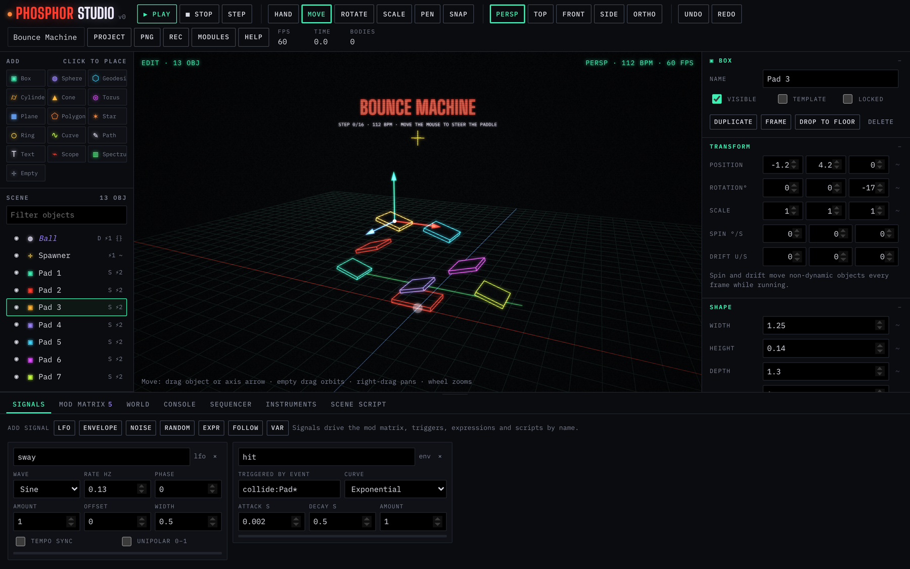
The real screen: Bounce Machine loaded, Pad 3 selected (green in the Scene list, Move gizmo in the viewport, its settings in the Inspector), the Signals tab open below.
- Header — transport (Play / Stop / Step), editing tools, camera views, undo and redo, the project name, and the Project, PNG, Rec, Modules and Help buttons. FPS, time and body count sit at the right on wide screens.
- Add palette — one button per object type; it places the object at the camera target and selects it.
- Scene list — every object with its colour, type icon and badges.
- Viewport — the CRT. Click to select, drag to move or orbit, and watch the scene run.
- Inspector — every setting of the selected object in folding sections; with nothing selected it shows a short orientation.
- Rack — project-wide panels as tabs. Drag the thin bar at its top edge to resize it. A purple number on a tab counts its items; a red one on Console counts errors.
On a narrow window (under about 860 px) the regions stack: viewport first, then palette and list, inspector, rack.
Core tools and modules
A new project shows only the core tools; everything else is a module you switch on from the Modules button in the header. Turning a module off only hides its controls — nothing in the project is deleted and the engine keeps running it. Loading a template or a saved project switches on every module that project already uses.
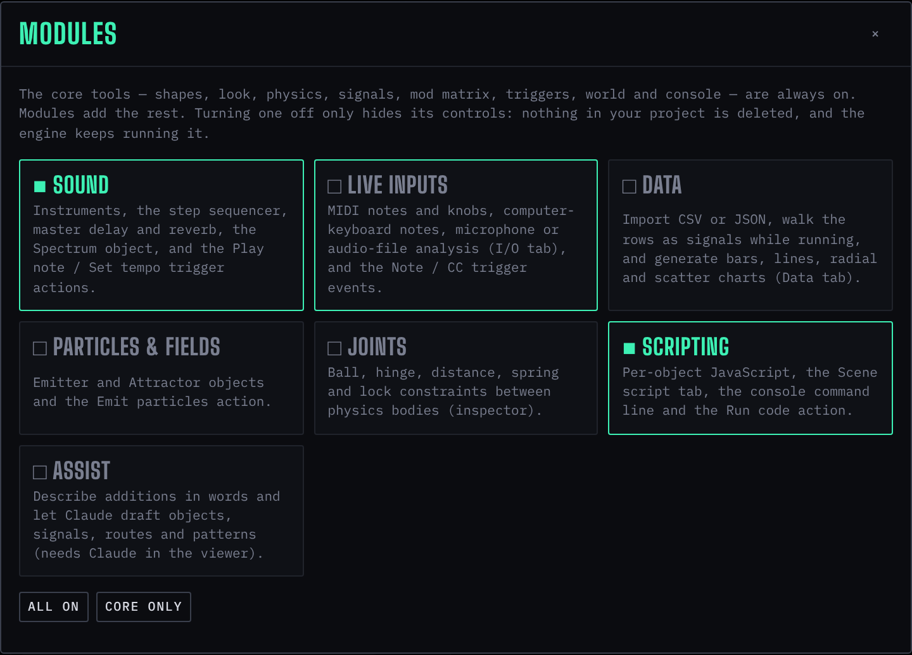
Header → Modules. Click a card to toggle it; a filled square means on.
Always visible (core): the Add palette (box, sphere, geodesic, cylinder, cone, torus, plane, polygon, star, ring, curve, path, text, scope, empty), the Scene list, the Inspector sections Object, Transform, Shape, Look, Physics, Triggers and Modulation, and the rack tabs Signals, Mod matrix, World and Console.
| Module | What it adds | Turn it on when you want to… |
|---|---|---|
| Sound | Sequencer and Instruments tabs, the Spectrum object, the Play note and Set tempo actions, the Sequencer step / track trigger events | make anything audible, build an instrument, sync visuals to a groove |
| Live inputs | I/O tab (MIDI, computer-keyboard notes, microphone, audio file), Note and CC trigger events | play the scene from a controller, react to sound from outside |
| Data | Data tab: paste or load CSV/JSON, row cursor, chart generators | turn a dataset into a visual or a sound |
| Particles & fields | Emitter and Attractor objects, the Emit particles action | sparks, fountains, swarms, force fields |
| Joints | Joints section in the inspector (ball, hinge, distance, spring, lock) | pendulums, chains, ragdolls, springy links |
| Scripting | Script section per object, Scene script tab, console command line, Run code action | logic the visual controls cannot express |
| Assist | Assist tab: describe additions in words, Claude drafts editable objects | rough out a scene quickly, then refine by hand |
All on and Core only in the Modules window switch everything at once. The choice is saved with each project.
Quick start: a bouncing, glowing first scene
In about five minutes you build a ball that falls on a tilted slab, flashes on impact and is lit by a slowly pulsing hue — touching objects, physics, triggers, signals and the mod matrix once each.
- Start clean. Project → Blank. You get a floor grid, one LFO called
lfo1and the core tools. - Add a slab. Click Box in the Add palette. In the Inspector set Shape width 3, height 0.2, depth 2; Transform position Y 1, rotation Z 15.
- Make it solid. Physics → Body Static, Bounce 0.8. Look → Style Solid (hidden line), Stroke a colour you like.
- Add a ball. Click Sphere. Position Y 5, X −0.8. Physics → Dynamic, Bounce 0.7.
- Run it. Press Play (or Space). The ball falls, bounces off the slab and rolls away. Press Stop — it is back at Y 5.
- Make the slab react. Select the box → Triggers → Hit → flash. Play again: the slab flashes white each time it is struck.
- Animate a property. On the box, press the ~ button next to Hue shift. The Mod matrix opens with a new route
lfo1 → Box · Hue shift, amount 90. Play: the slab's colour sweeps ±90° every two seconds. - Throw things. While running the tool switches to Hand: drag the ball with the mouse and let go to throw it.
- Keep it. Rename the project in the header field, then Project → Save here or Export .json.
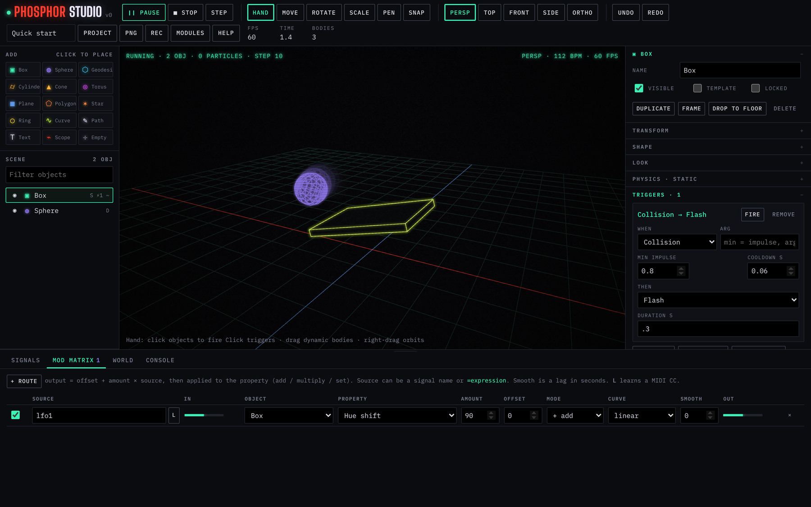
The finished quick start a moment before impact: the ball leaves a phosphor trail, the Inspector shows the slab's Collision → Flash trigger, and the Mod matrix shows the lfo1 → Box · Hue shift route with its live In and Out meters.
From here, turn on the Sound module and change the trigger's action to Play note to hear the impacts — the recipes section builds this into an instrument.
Viewport, camera and tools
The viewport is the CRT screen in the middle; the camera orbits a target point and every tool works directly on it.
Camera
- Left-drag on empty space (or Alt + drag anywhere) orbits.
- Right-drag, middle-drag or Shift + drag pans the target.
- The mouse wheel zooms (moves the camera closer or further).
- Double-click an object, or select it and press F, to frame it.
- Persp / Top / Front / Side (keys 1–4) jump to fixed views; Persp returns to where you were. Ortho (key 5) removes perspective — Front + Ortho is a flat 2D drawing board.
- Field of view, distance and target are also numeric in World → Camera.
Tools (header, or keys)
| Tool | Key | What a drag does |
|---|---|---|
| Move | W | Drag an object to slide it in the plane facing you; drag an axis arrow (red X, green Y, blue Z) to move along that axis only. |
| Rotate | E | Drag an axis handle to turn about that local axis; drag the object to turn it freely. |
| Scale | R | Drag an axis handle to stretch that axis; drag the object to scale uniformly. |
| Pen | P | Draw a stroke on the plane through the camera target; on release it becomes a Path object (closed if you end near the start). |
| Hand | H | While running: click an object to fire its Click triggers, drag a dynamic body to grab and throw it. While stopped: select. |
| Snap | — | Toggle: moves snap to 0.25 units, rotations to 15°, scales to 0.1. |
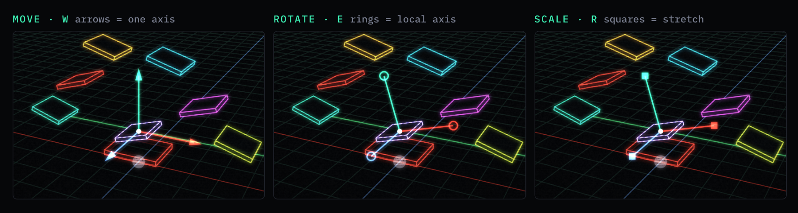
The gizmo for each tool on the same pad. Grab a handle to work on one axis (red X, green Y, blue Z); grab the object itself for free movement.
Play switches to Hand automatically and Stop switches back, unless you picked a tool yourself. Clicking empty space deselects. A Locked object cannot be dragged.
Shortcuts
| Keys | Action |
|---|---|
| Space | Play / pause (while running, only if no trigger listens for the space key) |
| Esc | Deselect; while running, stop |
| Ctrl Z / Ctrl Shift Z (or Ctrl Y) | Undo / redo |
| Ctrl D | Duplicate selection |
| Delete / Backspace | Delete selection |
| Ctrl S | Save the project in this browser |
| F, 1–5, W E R H P | Frame, views, tools (edit state only) |
| ? | Help |
While running, letter keys go to the scene (Key triggers, keyboard notes) instead of acting as shortcuts.
Heads-up display — top left shows state, object and particle counts and the sequencer step; top right the view, BPM and frame rate; bottom left a hint for the current tool; bottom right the recording timer.
Objects
Every object is one of 18 types; clicking a type in the Add palette places it at the camera target and selects it. The type decides the Shape parameters; everything else (transform, look, physics, triggers) is shared. Units are scene units — the floor grid has 1-unit squares and Y points up.
| Type | Shape parameters | Good for |
|---|---|---|
| Box | width, height, depth, divisions (adds grid lines on each face) | slabs, pads, walls, bars, cages |
| Sphere | radius, rings, segments | balls, planets, bobs |
| Geodesic | radius, subdivide 0–3 | low-poly spheres, domes, cores |
| Cylinder | top radius, bottom radius, height, segments | posts, drums, pipes |
| Cone | a cylinder with top radius 0 | markers, nozzles, spikes |
| Torus | ring radius R, tube radius r, segments, tube segments | halos, rings, wheels |
| Plane | width, depth, divisions (lies flat on X–Z) | grounds, grids, ramps, screens |
| Polygon | sides, radius, star inner ratio (1 = regular), extrude depth (0 = flat) | hexagons, badges, prisms |
| Star | a polygon with 5 sides and inner ratio 0.45 | stars, sparkles |
| Ring | radius, segments, arc °, ticks, tick length (in X–Y) | dials, gauges, orbits, clock faces |
| Curve | preset, x(u,t), y(u,t), z(u,t), samples, closed | Lissajous figures, helices, knots, waves, any formula |
| Path | closed, smooth (0–4), point list | hand-drawn strokes, data lines, outlines |
| Text | text with {expressions}, size, align, font (display / mono) | titles, labels, live readouts |
| Scope | signal name, seconds of history, width, height, gain, mode (line / dots / bars) | plotting any signal over time |
| Empty | size | invisible logic carriers, spawners, pivots |
| Spectrum (Sound) | source out / in, bins, width, height, mode (bars / line / radial / wave) | audio-reactive analyzers |
| Emitter (Particles) | rate, speed, spread, life, gravity ×, drag, size, bounce, max, streak | fountains, sparks, smoke |
| Attractor (Particles) | strength (negative repels), radius, softening, affect bodies / particles | wells, vortices, magnets |
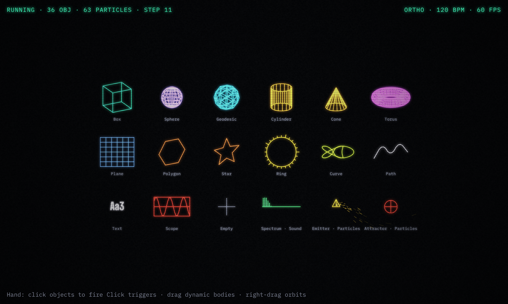
Every object type as it draws on the screen, running (so the scope, spectrum and emitter are live). Labels marked Sound or Particles need that module.
Curves. u runs 0→1 along the curve, t is time while running, i and n are the sample index and count. Picking a preset fills x/y/z; editing any formula switches the preset to custom. Example: x = sin(u*TAU*3 + t)*1.6, y = sin(u*TAU*2)*1.6, z = 0 draws a moving 3:2 Lissajous.
Paths. Draw them with the Pen tool, or type points one per line as x, y, z. Smooth 1–4 rounds the corners by repeated corner cutting.
Text. Anything in braces is evaluated every frame: STEP {step+1} · {S("lfo1").toFixed(2)} · {D("month")} · {t.toFixed(1)}s. Text always faces the camera.
Object flags (Inspector → top section): Visible hides it in both states; Template keeps it out of the running scene so it only appears when a Spawn action creates a copy (shown dimmed in edit); Locked stops accidental dragging. Duplicate, Frame, Drop to floor (rests the bottom on the floor) and Delete sit underneath.
The Scene list shows each object's icon in its colour and badges: D/S/K for a dynamic, static or kinematic body, ⚡n for triggers, {} for a script, ~ when something modulates it. Click selects, double-click frames, the dot toggles visibility, the filter box searches by name or type.
Transform, motion and look
Position, rotation and scale place an object; Spin and Drift move it on their own while running; the Look section decides how its lines are drawn.
Transform. Position X/Y/Z in units, Rotation in degrees (applied X, then Y, then Z), Scale per axis. Every number field can be typed, nudged with the arrows, or scrubbed: drag the field's label left or right (hold Shift for 10× steps). Edits while running move the live object too.
Motion. Spin °/s adds a constant rotation rate per axis and Drift u/s a constant velocity. They act on any object that is not a dynamic physics body, including static and kinematic bodies, and reset on Stop.
Look.
| Setting | Effect |
|---|---|
| Stroke | Line colour. |
| Style | Wire draws every edge. Solid fills the faces with the Fill colour and hides back edges (a hidden-line drawing). X-ray draws front edges bright and back edges faint. Points draws only vertices. Dashed draws dashed edges. |
| Width | Line thickness in pixels. |
| Glow | Bloom strength multiplier (needs the tube on). |
| Opacity | 0–1. |
| Hue shift | Rotates the stroke colour around the colour wheel, in degrees — the easiest property to animate. |
| Dash | Dash length; above 0 it dashes any style. |
| Fill, Fill opacity | Solid style only: face colour and how much it hides what is behind. |
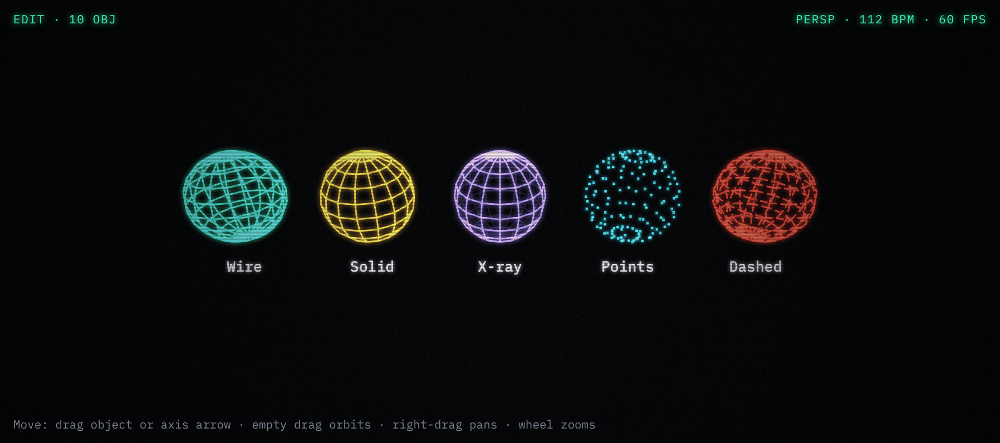
One sphere, five styles. Solid hides the back half; X-ray keeps it faint.
Lines add up like light: overlapping strokes get brighter, as on a real vector monitor (with Persistence above 0 they combine by the brightest instead, so trails never burn out to white). A Flash (from a trigger) briefly pushes the stroke towards white, widens it and boosts glow.
The tube (World tab → Tube). These settings apply to the whole screen and to PNG and video exports.
| Setting | Effect |
|---|---|
| CRT on | Master switch for all tube effects. |
| Scanlines | Strength of the horizontal line pattern. |
| Bloom | Global glow strength. |
| Noise | Animated grain. |
| Vignette | Darkened corners. |
| Flicker | Occasional brightness dips. |
| Persistence | 0–0.97: how long moving lines leave phosphor trails while running. 0.3 is subtle, 0.75 paints streaks. |
| Background, Grid colour, Floor grid | Screen colour and the reference grid. |
| Glow quality | Auto switches from soft blur to a cheaper halo when the frame rate stays under about 32 fps; Soft blur or Fast halo force one. |
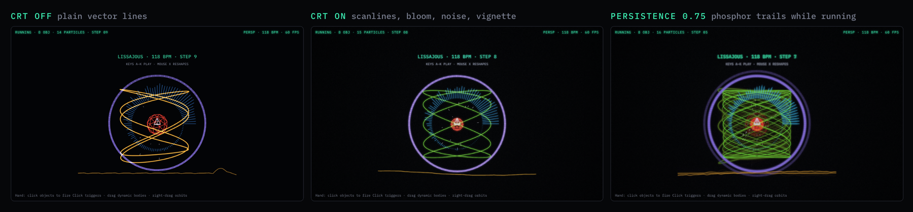
The Lissajous Synth template three ways: tube off, tube on with default settings, and Persistence 0.75.
Physics
Give an object a body in Inspector → Physics and it takes part in a full 3D rigid-body simulation (cannon.js) while running; bodies are rebuilt from your settings every time you press Play.
| Body | Moves how | Use it for |
|---|---|---|
| None (visual) | Only by transform, motion, mods and scripts; nothing collides with it | decoration, text, logic |
| Static | Never pushed by collisions; mods and motion can still move it | floors, walls, pads, obstacles |
| Dynamic | Owned by the simulation: gravity, collisions, impulses | balls, debris, anything that falls or gets thrown |
| Kinematic | Follows its transform, mods and scripts exactly and shoves dynamic bodies out of the way with real velocity | paddles, pistons, mouse-driven pushers, moving platforms |
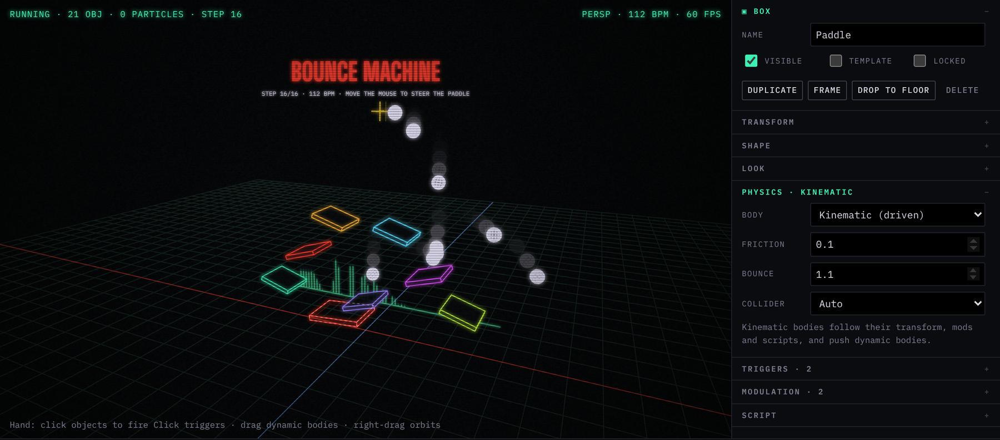
Bounce Machine running: dynamic balls bounce off static pads; the selected Paddle is kinematic, so the mouse route moves it and it shoves the balls.
Body settings. Mass (dynamic only; heavier bodies push lighter ones). Friction and Bounce (restitution) — the effective value for a contact is the product of both bodies' values, so two 0.8 surfaces bounce at 0.64. Lin. / Ang. damping (0–1) bleed off speed and spin like air drag. Velocity and Spin °/s give a dynamic body a starting push. Fixed rotation stops it tumbling.
Colliders. Auto picks the natural shape: box → box, sphere and geodesic → sphere, cylinder and cone → cylinder, polygon → prism (flat polygons get a thin slab), torus → a disc, plane → a thin box, everything else → a box around its outline. Override with Box (bounds), Sphere (bounds), Cylinder, Prism or Disc. Scale is baked into the collider when the body is built.
World (World tab → Physics). Gravity as an X/Y/Z vector (default 0, −9.82, 0 — try 0, 0, 0 for space or a sideways vector for wind). Floor adds an infinite ground at Floor Y with its own bounce and friction. Iterations trades accuracy for speed in stacks and joints (10 is good). Max substeps limits catch-up after a slow frame. Time scale slows or speeds everything (0.25 = slow motion). Max spawned objects caps how many Spawn copies can exist; the oldest is removed first. Floor and solver changes apply on the next Play.
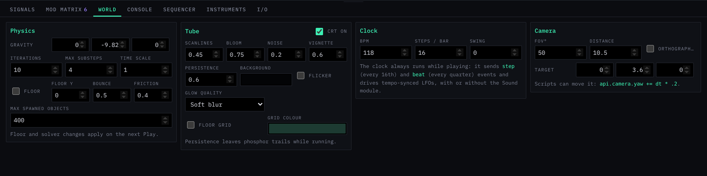
World tab: physics on the left, then tube, clock and camera.
Interacting. With the Hand tool, drag a dynamic body to hold it on a spring towards the cursor; let go mid-drag to throw it. Editing a body's transform, scale, shape or physics while running rebuilds that body in place.
Collisions as events. Every contact reports an impact speed (imp, in units per second). A Collision trigger fires when imp is at least its Min impulse — resting contact sits near 0, a firm drop from 2 units is around 6. The other object's name can filter the trigger; the ground is called floor.
Signals
A signal is a named number that changes over time; anything in the studio can read it by name — the mod matrix, triggers, text, curves, expressions and scripts. Create them in the Signals tab; each card has a live meter (centre = 0, right = positive, left = negative) that moves while running.
| Type | Output | Settings |
|---|---|---|
| LFO | A repeating wave, −1…+1 (or 0…1 with Unipolar) | Wave (sine, triangle, saw, ramp, square, sample & hold), Rate Hz, or Tempo sync + Beats per cycle, Phase, Amount, Offset, pulse Width (square) |
| Envelope | 0…1 rise-and-fall when an event arrives | Triggered by event (pattern below), Attack s, Decay s, Curve exponential / linear, Amount; peak scales with the event's velocity |
| Noise | Smooth wandering value, −1…+1 | Rate, Seed, Amount, Offset, Unipolar |
| Random | A new random target every 1/Rate seconds, glided | Rate, Glide s, Amount, Offset, Unipolar |
| Follow | An envelope follower of another signal | Source, Gain, Rise s, Fall s — turns a spiky audio.level into a smooth swell |
| Expr | Any formula, evaluated every frame | Expression, e.g. S("mouse.down") ? -140 : 60 |
| Var | A value that actions and scripts set | Initial value; changed by the Set variable action or api.vars.name = … |
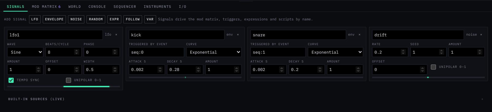
Signals tab of the Lissajous Synth while it plays: a tempo-synced LFO, envelopes on seq:0 (kick) and seq:1 (snare), and a noise drift. The bar under each card is its live meter.
Rename a signal on its card; routes that used the old name follow automatically. Signals are evaluated top to bottom each frame, so an Expr can read the ones above it.
Envelope event patterns. Comma-separated names; a trailing * matches a prefix. Examples: seq:0 (sequencer track 0 hit), beat, collide:Pad* (any object whose name starts with Pad was hit), collide (any collision), note, key:a, click:Button, or any custom event name you send with the Send event action.
Built-in sources (open “Built-in sources (live)” at the bottom of the tab to watch them):
| Name | Meaning |
|---|---|
time, beat, bar, step, beats, bpm |
Seconds since Play; 0→1 ramp through each beat; 0→1 through each 4-beat bar; sequencer step; beats counted; tempo |
mouse.x, mouse.y |
Pointer over the viewport, −1…+1 (Y up) |
mouse.wx, mouse.wy, mouse.wz |
Pointer in world units on the plane through the camera target — use with mode set to make things follow the mouse |
mouse.down |
1 while a button is held |
audio.level, audio.low, audio.mid, audio.high, audio.note, audio.voices |
The studio's own output: loudness, three bands, last note played, voices sounding |
in.level, in.low, in.mid, in.high |
Audio input analysis (Live inputs module) |
midi.note, midi.vel, midi.gate, midi.bend, midi.cc.N |
Last MIDI note, its velocity, 1 while held, pitch bend −1…+1, controller N 0…1 |
key.a … |
1 while that key is held (running only) |
data.<column>, data.<column>.raw, data.row, data.phase |
Current data row, normalised 0…1 or raw (Data module) |
obj.<Name>.x / .y / .z / .speed / .vx / .age / .rx … |
Any object's live position, speed, velocity, age, rotation |
self.x … |
The same for the object that owns the trigger or expression |
var.<name>, random, fps |
A variable; a fresh random 0…1; frame rate |
Mod matrix
The mod matrix is a patchbay: each row (a route) continuously drives one numeric property of one object from one signal, every frame while running. Its value is computed as
\text{output} = \text{offset} + \text{amount} \times \text{curve}(\text{source})
and then applied to the property in one of three modes:
- + add — property = your edited value + output. The natural choice: the object wobbles around where you put it.
- × mul — property = edited value × output. Good for scaling things up and down proportionally.
- = set — property = output. Ignores the edited value; use it for mouse-following (
mouse.wx→ Position X, amount 1) or data-driven placement.
| Column | Meaning |
|---|---|
| ☑ | Route on/off |
| Source | A signal name (autocompletes) or = followed by an expression, e.g. =sin(t*3)*S("lfo1") |
| L | MIDI learn: click, then move a knob — the source becomes midi.cc.N (Live inputs) |
| In / Out | Live meters of the source and of the computed output |
| Object, Property | The target. Properties: Position X/Y/Z, Rotation X/Y/Z (degrees), Scale (all) and Scale X/Y/Z, Line width, Glow, Opacity, Hue shift, Fill opacity, plus every numeric Shape parameter of that type (radius, sides, tube r, bins…) |
| Amount, Offset | See the formula; negative amounts invert |
| Curve | linear, abs (folds negatives up), squared (keeps sign, softer near 0), 1 − x (inverts a 0…1 source), stepped (quantises to quarter steps) |
| Smooth | Lag in seconds; 0.05–0.2 removes jitter from mouse and audio sources |
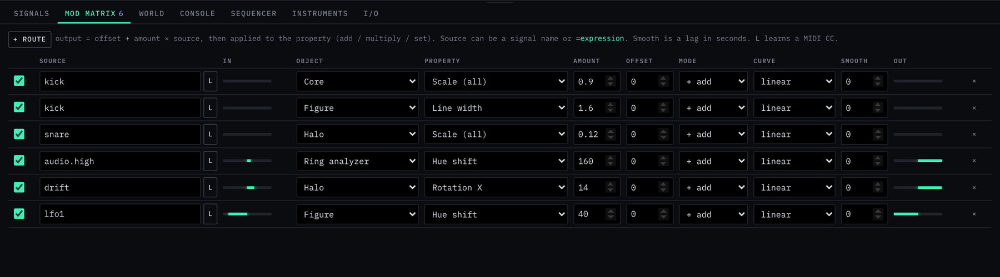
The Lissajous Synth's six routes: the kick envelope scales the Core and thickens the Figure, the snare pulses the Halo, high frequencies tint the ring analyzer, and two slow signals drift rotation and hue.
Fast ways in. The small ~ at the end of an inspector row creates a route for that property from your first signal (Position, Rotation and Scale offer an axis menu) and opens the tab. The Inspector's Modulation section lists every route aimed at the selected object. + Route in the tab targets the selected object.
Rules worth knowing. Several routes can hit the same property; they apply in table order. Routes on Position or Rotation of a dynamic body are ignored because the simulation owns it — make it kinematic, or modulate scale, look and shape instead. Routes on a static or kinematic body move its collider too. Routes aimed at a template also drive every spawned copy. Shape routes rebuild geometry every frame, which is fine for a handful of objects.
Triggers
A trigger is a rule on one object: When something happens, Then do something — the way to make scenes respond to events rather than flow continuously. Add them in Inspector → Triggers with + Trigger or a preset (Hit → flash or Hit → note, Click → jump, Key → impulse, Beat → flash). An object can hold any number; each card shows its rule as a title and has a Fire button that runs the action once while the scene is running.
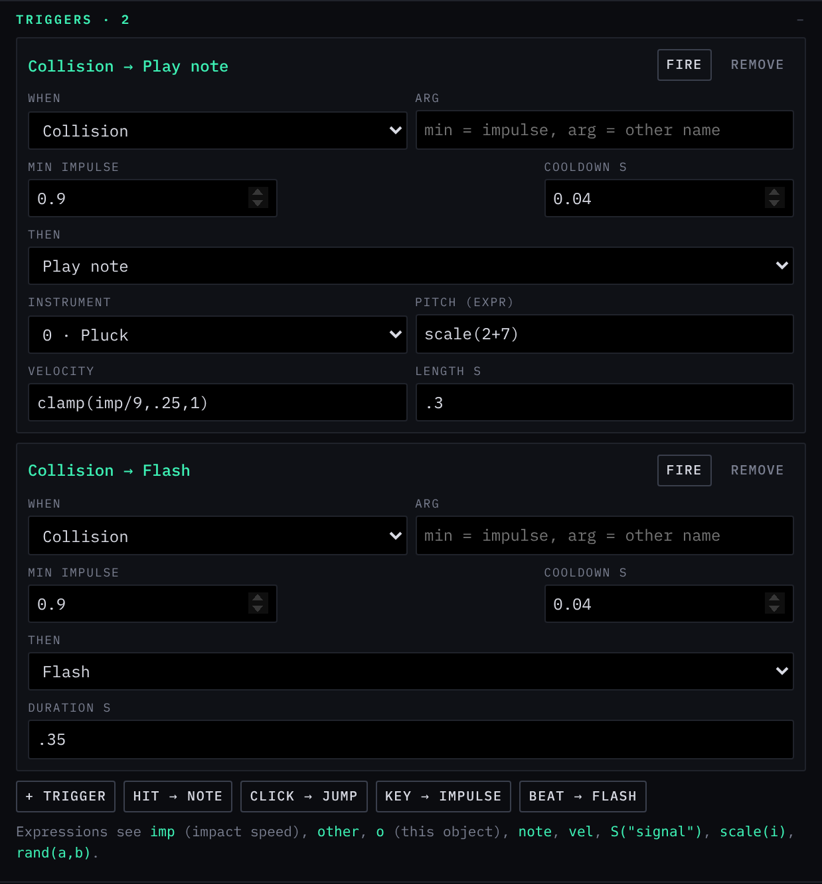
Pad 3 in Bounce Machine carries two triggers on the same event: one plays scale degree 9 at a velocity set by impact speed, the other flashes the pad. The presets sit under the cards.
When
| Event | Arg | Fires when |
|---|---|---|
| Collision | other object's name prefix (empty = anything, floor = ground) |
this body is hit at an impact speed ≥ Min impulse |
| Clicked | — | clicked with the Hand tool while running |
| Key down / Key up | key name: a, space, arrowup, enter… (empty = any key) |
that key goes down / up while running |
| Every N beats | N (empty = 1) | the clock's quarter-note count is a multiple of N |
| Every N seconds | seconds | a timer per object elapses |
| Signal crosses | a signal name (self.z, lfo1, audio.level…); Threshold + Edge rising / falling / both |
the signal passes the threshold |
| Custom event | event name or pattern (ping, boom*) |
a Send event action anywhere emits that name |
| On play | — | once when Play starts (and when a copy is spawned) |
| Sequencer step | step numbers 0,4,8 (empty = every step) |
Sound module: the sequencer reaches those steps |
| Sequencer track hit | track number | Sound module: that track plays a step |
| MIDI/keyboard note | note number (empty = any) | Live inputs: a note arrives |
| MIDI CC | controller number | Live inputs: a knob moves |
Cooldown (seconds) ignores repeats inside that window — keep 0.05–0.1 on collisions so a rattle is one hit, 0 on beats.
Then
| Action | Fields | Does |
|---|---|---|
| Flash | Duration | brightens and widens the stroke, then fades |
| Set colour | colour, or =expression |
replaces the stroke colour |
| Apply impulse | vector x, y, z (expressions) |
kicks a dynamic body; on other objects adds to Drift |
| Set velocity | vector | replaces the velocity |
| Set property / Add to property | property path (look.hue, pos.1, shape.r, state.count…), value expression |
changes the live object; resets on Stop |
| Spawn object | object (often a Template), offset vector | creates a copy at this object's position + offset |
| Destroy | target (empty = this) | removes the live object |
| Send event | name | broadcasts an event to every trigger, envelope and script |
| Set variable | variable name, value | sets a Var signal / var.<name> |
| Log | message expression | writes to the Console |
| Play note | instrument, pitch, velocity, length (all expressions) | Sound module |
| Set tempo | BPM expression | Sound module |
| Emit particles | count | Particles module: bursts from this object |
| Run code | JavaScript | Scripting module |
Action fields are expressions, so one trigger can adapt: pitch scale(round(o.pos[0]*2)+7) picks a note from the object's X position; velocity clamp(imp/8,.2,1) makes harder hits louder; impulse rand(-2,2), 6, 0 jumps in a random direction. The variables available are listed in the next section.
Pattern: chains of events. One object's Send event “boom” can make a dozen others flash (Custom event “boom”), start an envelope that pulses a whole layer through the mod matrix, and spawn debris — without any code.
Expressions
Wherever a field accepts a formula — trigger fields, curve coordinates, text braces, Expr signals, = mod sources — you write one JavaScript expression that returns a number (or a colour string for Set colour). A plain number is just a constant. Mistakes never crash the scene: the field falls back to its default and the Console shows the error once every few seconds.
| Name | Value |
|---|---|
t, dt |
seconds since Play, seconds since the last frame |
S("name") |
any signal or built-in source |
D("column") |
the current data row's raw value (text or number) |
o |
the object that owns the trigger, curve or text: o.pos[0], o.vel, o.speed, o.age, o.name, o.state |
imp, other |
in collision triggers: impact speed and the other object (other.name) |
note, vel |
in note triggers: MIDI note number and velocity 0–1 |
step |
current sequencer step |
u, i, n |
in curves: position 0→1, sample index, sample count |
v |
the variables object (v.score) |
mouse |
mouse.x, mouse.wx, mouse.down… |
scale(i) |
MIDI note of scale degree i in the project key (World/Instruments: Root note + Scale); negative degrees go down |
rand(a, b), noise(x, y) |
random number in [a, b); smooth noise about −1…+1 |
api |
the full scripting API (see Scripting) |
| maths | sin cos tan asin acos atan atan2 abs floor ceil round min max pow sqrt exp log hypot sign random PI TAU |
| helpers | fract(x), mix(a, b, k), clamp(x, lo, hi), smooth(a, b, x) (smoothstep), step01(edge, x) |
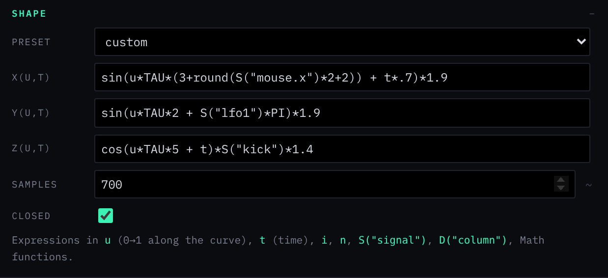
Expressions in use: the Lissajous Synth's Figure is one Curve whose x reads the mouse, whose y reads lfo1 and whose z breathes with the kick envelope.
Examples:
- Hue that follows height: a route with source
obj.Ball.y, property Hue shift, amount 20 (routes have noo, so name the object). - Louder hits, higher notes: pitch
scale(7 + round(imp/2)), velocityclamp(imp/10, .2, 1). - Colour that flips every half bar: a beat trigger with Set colour
=step < 8 ? "#ff3d2e" : "#3df0b4". - A breathing ring on a Curve:
x = cos(u*TAU)*(1 + .2*S("lfo1")),y = sin(u*TAU)*(1 + .2*S("lfo1")).
Running, live editing, templates and spawning
Transport. Play starts the scene from the edit state: bodies are built, signals start at 0, the clock starts, On play triggers fire. Pause freezes time (the picture stays, sound stops scheduling). Stop throws the running copy away and shows your edit state again. Step advances exactly one frame (1/60 s) — from Stop it starts paused — for inspecting a collision.
What survives Stop. Anything you typed into the Inspector, tabs or World settings is part of the project and stays. Anything the scene did to itself — bodies moving, Set property / Set colour actions, spawned copies, destroyed objects, variables, script state — is discarded.
Live editing. You can keep editing while it runs: colours, shapes, look and trigger fields apply at once; moving an object teleports it (and its body); changing a body's physics, scale or shape rebuilds the body. A changed script applies when you press Apply in its section (or at the next Play).
Templates and spawning. Tick Template on an object to keep it out of the running scene. A Spawn object action (or api.spawn("Name", [x,y,z])) then creates live copies of it — each copy carries the template's look, physics, triggers, routes and script, gets a name like Ball#7, and starts with its own age 0. Give copies a lifetime in their script (if (o.age > 10) o.destroy();) or rely on Max spawned objects in World. The Bounce Machine's spawner is an Empty with an Every 1 beats → Spawn Ball trigger.
Built-in example projects (Project button). They are the quickest way to see each system working; open one, press Play, then take it apart in the Inspector.
| Template | Shows | Modules it switches on |
|---|---|---|
| Bounce Machine | beat-driven spawning, collision → note and flash, a kinematic paddle that follows the mouse, an envelope pulsing a spectrum | Sound, Scripting |
| Pendulum Wave | 12 ball-joint pendulums of tuned lengths, threshold triggers ringing bells as each crosses the centre, a scope | Sound, Joints |
| Lissajous Synth | a drum pattern driving a formula curve, a pulsing geodesic and radial spectrum through envelopes; keys A–K play | Sound, Live inputs, Particles |
| Particle Garden | two fountains and an attractor that follows the mouse and repels while the button is held (an Expr signal) | Particles |
| Data Skyline | sample energy data as bars and a line, a cursor walking the rows, the value read out and sonified | Sound, Data |
| Blank | a floor, one LFO, nothing else | none |
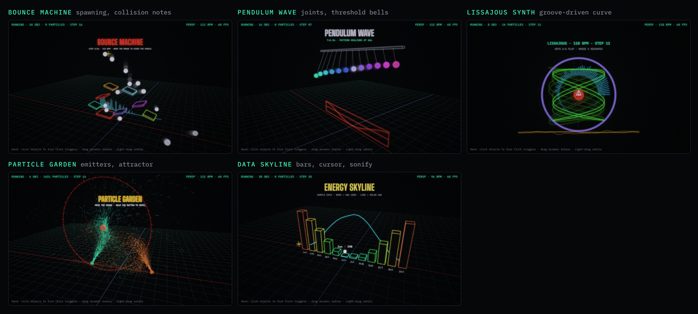
The five example projects, each a few seconds after Play.
Loading a template replaces the current scene; save first if you want to keep it.
Module guides
Each module below is hidden until you switch it on from Modules; every project starts with the same seven instruments and five sequencer tracks, ready for when you do.
Sound
Instruments tab. Each card is one instrument, numbered 0, 1, 2… — that number (or its name) is what a Play note action and a sequencer track use. Test plays scale degree 7 so you hear it alone. Add instrument creates one of six engines; Engine switches an existing card.
| Engine | Main controls |
|---|---|
| Subtractive | Wave (saw, square, triangle, sine, noise), Voices 1–6 with Detune in cents, Filter type + Cutoff Hz + Res + Env Hz (how far the filter opens on each note), Attack / Decay / Sustain / Release, Sub oscillator level |
| FM | Ratio (modulator to carrier frequency), Index (brightness, decays during the note), A/D/S/R — bells, electric pianos, metallic hits |
| Kick | Tone Hz (end pitch), Decay; Pitch tracks note makes it tunable |
| Snare | Tone Hz (body), Decay |
| Hi-hat | Tone Hz (high-pass cutoff), Decay |
| Tuned noise | Q (how pitched), Decay — the note sets the filter frequency, for wind, breaths, risers |
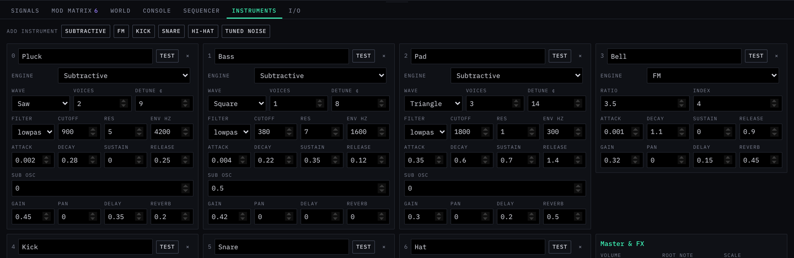
Instruments tab: one card per instrument, numbered for triggers and tracks, with Test buttons and the shared Master & FX card.
Every engine also has Gain, Pan (−1…+1) and sends to the shared Delay and Reverb. The Master & FX card holds Volume, the project key (Root note as a MIDI number, Scale: major, minor, dorian, phrygian, lydian, mixolydian, pentatonic, minor pentatonic, blues, whole-tone, chromatic), Delay time or tempo-synced beats, Feedback, Delay mix, Reverb size and mix. The default kit is Pluck, Bass, Pad, Bell, Kick, Snare, Hat.
Sequencer tab. BPM, Swing (delays every second 16th) and Steps (1–32) sit on top. Each track row has a mute button, a name, an instrument (or events only, which plays nothing but still sends its event), and a MIDI note shown with its name. Click a step to toggle it; Shift-click cycles full → half → off for accents. Randomize sprinkles a pattern on unmuted tracks; Clear empties all. A white outline marks the playing step.
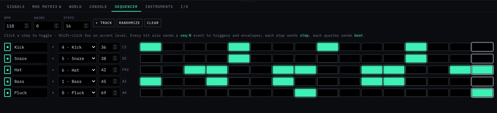
The Lissajous Synth groove: four-on-the-floor kick, snare on 2 and 4, off-beat hats, a bassline and two pluck notes. The outlined column is the step playing.
Every hit on track N sends the event seq:N (with its velocity) to triggers and envelopes; every step sends step; every quarter sends beat. That is how visuals lock to the groove: an envelope on seq:0 turned into a scale route makes an object pump with the kick.
Spectrum object. Draws the live frequency content of the studio's output (out) or the audio input (in) as bars, a line, a radial burst or the raw waveform (wave).
Live inputs
The I/O tab has four cards.
- MIDI — Connect MIDI asks the browser for access. Notes become
noteevents and themidi.note / vel / gatesources; knobs becomemidi.cc.Nandccevents; pitch bend ismidi.bend. Play incoming notes on instrument sounds them on the keyboard instrument. In the mod matrix, L learns a knob. - Keyboard notes — with the box ticked, while running the computer keys A S D F G H J K play white notes and W E T Y U black notes from middle C; Z / X shift the octave. The on-screen keys (C3–C5) play by clicking at any time. Notes reach Note triggers and scripts like MIDI notes.
- Audio input — Microphone or Audio file… feed the input analyser (
in.level,in.low/mid/high, Spectrum set to in). Hear the audio file also plays it through the speakers. - Export — the same file exports as the Project window (see Saving).
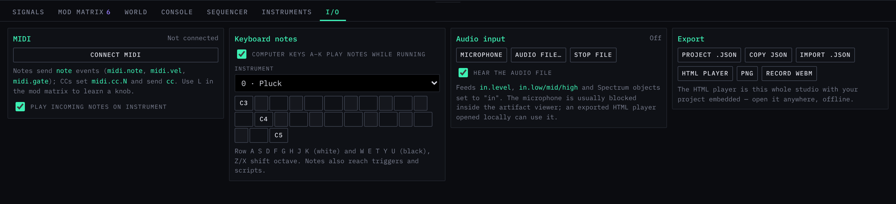
I/O tab. The on-screen keys play the keyboard instrument even when the scene is stopped.
The artifact viewer usually blocks the microphone and often Web MIDI; the exported HTML player opened from your own disk in Chrome or Edge can use both.
Data
Paste CSV (first row = column names; comma, semicolon, tab or pipe) or JSON (an array of objects or of arrays) into the Data tab, use Load file…, or a sample set. The table shows each column and marks text columns. While running a cursor walks the rows at Rows / sec (looping), optionally Interpolating between rows. Read it as data.<column> (0…1 between the column's min and max), data.<column>.raw, data.row, or as text with D("column").
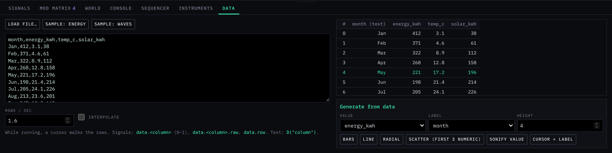
Data tab with the sample energy set: raw text on the left, the parsed table with the current row highlighted, and the generators under it.
Generate from data builds editable objects from the column you pick (Value), an optional Label column and a Height in units: Bars (one box per row, coloured by value, with labels), Line (a smoothed path), Radial (a closed path around a ring), Scatter (spheres placed by the first three numeric columns inside a frame), Sonify value (an Empty that plays the current value as a scale note every beat, and sets the cursor to one row per beat), Cursor + label (a marker and a live readout that ride along the bars through four routes).
Particles & fields
An Emitter sprays particles along its local +Y axis — rotate it to aim. Rate per second (0 = only bursts), Speed, Spread cone in degrees (180 = all directions), Life seconds, Gravity × (0 floats, negative rises), Drag, Size px, Bounce on the floor, Max alive, Streak (lines instead of dots). Particles take the emitter's colour and hue. An Attractor pulls dynamic bodies and particles within Radius; Strength sets the pull (negative repels) and Softening keeps it finite near the centre. The Emit particles action bursts from any object — from an emitter using its own settings, from anything else as a spherical spray in its colour.
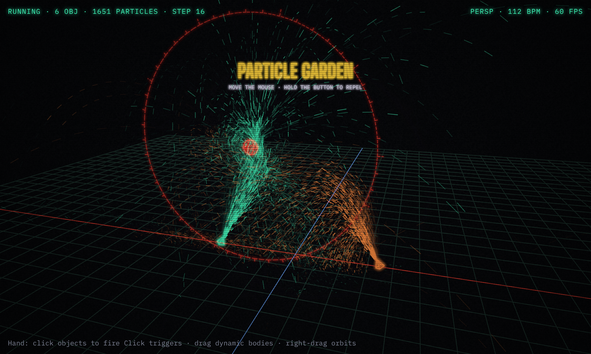
Particle Garden: two emitters aimed inward, an attractor (red ring) that follows the mouse, and high persistence painting the streams.
Joints
The Joints section appears in the inspector of an object with a physics body. + Joint, then choose a type and what it attaches To: another body by name, or (world anchor) — a fixed point you place with Anchor. Ball / point lets it swing freely around the pivot (pendulums, chains); Hinge swings about an Axis only (doors, flippers, wheels); Distance keeps a fixed length (rods); Spring pulls toward a Rest length with Stiffness and Damping (bouncy links); Lock welds two bodies. Rest or length −1 means “the distance at Play”. Body-to-body joints pivot at the midpoint plus Pivot offs. Joints draw as grey lines (springs dashed amber) while running.
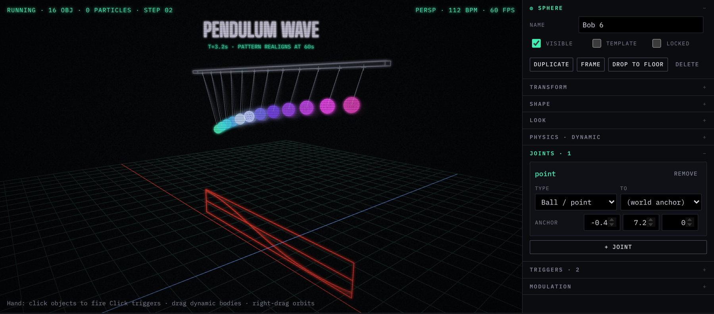
Pendulum Wave: each bob hangs from a world anchor on a Ball / point joint (grey lines). The selected bob's joint card shows the anchor position.
Scripting
Turns on a Script section for each object, the Scene script tab, the console command line and the Run code action. A script defines any of these functions; the last argument is always api:
| Object hook | Runs |
|---|---|
start(o, api) |
once at Play (or spawn) |
update(o, dt, api) |
every frame |
collide(o, other, imp, api) |
on every contact (no threshold — filter imp yourself) |
click(o, api) |
Hand-tool click |
beat(o, n, api), step(o, n, api), note(o, note, vel, api) |
clock and note events |
onEvent(o, name, data, api) |
every event, custom ones included |
release(o, api) |
just before the object is destroyed |
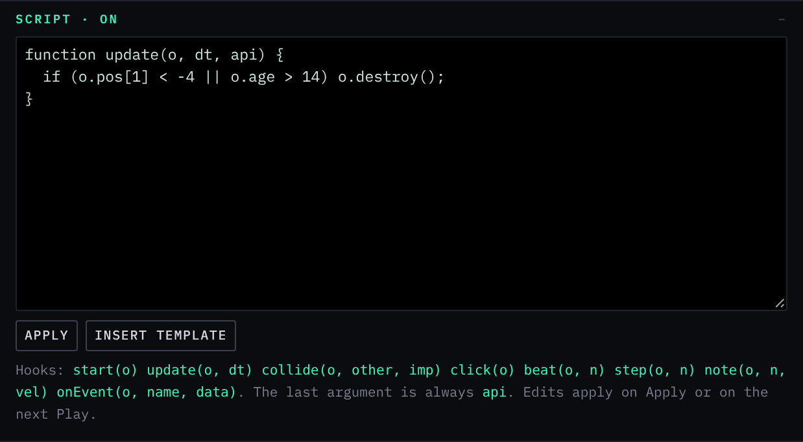
The Ball template's script: three lines that remove each spawned ball once it falls off the screen or gets old.
The scene script uses the same names without the o argument (update(dt, api) …). Insert template pastes a commented starter.
function start(o, api) { o.state.hits = 0; }
function collide(o, other, imp, api) {
if (imp < 1) return;
o.state.hits++;
api.note('Bell', api.scale(o.state.hits % 8), min(1, imp / 8));
if (o.state.hits >= 8) o.destroy();
}
The object (o): pos, rot (degrees), scl, look, shape (all writable), state (your own storage), vel (get/set), speed, age, name, def (the edit-time definition), body (the raw cannon.js body), and impulse(x,y,z), force(x,y,z), setPos(x,y,z), setRot(x,y,z), flashIt(seconds), emit(n), get(path), set(path, v), destroy().
The API: api.t, api.dt, api.S(name), api.D(col), api.vars, api.note(inst, pitch, vel, dur), api.scale(i), api.mtof(m), api.noteName(m), api.bpm (settable), api.step, api.beat, api.find(name), api.all(), api.spawn(name, pos, vel), api.destroy(o), api.burst(o, n), api.emit(name, data), api.setGravity(x,y,z), api.camera (yaw, pitch, dist, target, fov — settable), api.mouse, api.keys, api.data.rows / cols / get(col,i) / norm(col,i) / row, api.particles, api.world and api.CANNON for raw physics, api.rand, api.noise, api.clamp, api.lerp, api.log(...). The maths names (sin, PI, TAU, round…) are in scope without a prefix.
Console. Logs, script errors and (with Trace events) every event as it fires. With Scripting on, the input line evaluates an expression or statement against the running scene: api.find('Ball 2').vel, S('lfo1'), api.spawn('Ball',[0,6,0]).
An object script that throws 40 errors is switched off for that run and says so in the Console.
Assist
Type what to add (“a ring of 8 bells on springs that ring a pentatonic note when hit”), choose Add to the scene or Replace the scene, and press Generate. Claude returns ordinary objects, signals, routes, triggers and sequencer tracks, which land in the scene list and tabs for you to edit like anything else. It needs the artifact viewer's Claude connection and asks for permission on first use; outside it the tab does not appear.
Saving and exporting
Your work is autosaved in this browser after every change, but only the exported files are safe across devices and browser clean-ups — export a .json for anything you care about.
| Way | Where | What you get |
|---|---|---|
| Autosave | automatic | The last state reopens next time you load the studio in this browser |
| Undo / Redo | header, Ctrl Z / Ctrl Shift Z | Up to 120 steps; undo also stops a running scene |
| Save here | Project window, Ctrl S | A named slot in this browser (open or delete it from the Project window) |
| Project .json | Project window or I/O tab | The whole project as a file; Import .json brings it back |
| Copy JSON | I/O tab | The project on the clipboard, to paste into a message or a note |
| HTML player | Project window or I/O tab | A standalone copy of the whole studio with your project inside — opens offline in any browser, where microphone and MIDI usually work |
| PNG | header | A snapshot of the screen with tube effects, without the selection gizmo |
| Rec | header (press again to stop) | A WebM video of the screen with the studio's audio |
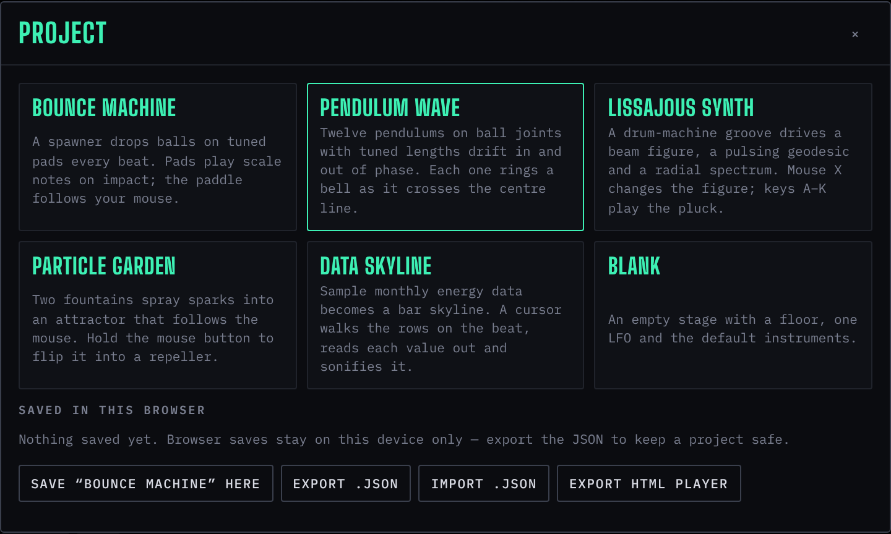
Header → Project: templates on top, saves in this browser, then file export and import.
Downloads go through the artifact viewer, which asks you to confirm each file. Where downloads are not available, PNG and video open in a preview to save by right-click, and text exports open in a box to copy.
The project name in the header becomes the file name. A project file holds objects, signals, routes, instruments, sequencer, data, scripts, camera, world settings and the module switches.
Recipes
Four builds, each using only the visual controls, that cover the main kinds of project.
A playable instrument: tuned tiles you hit with balls (Sound)
- Blank project, Modules → Sound. In Instruments set Root note 60 and Scale pentatonic.
- Add a Box (width 1, height 0.15, depth 1, Physics Static, Bounce 0.9, Style Solid). Add a trigger: Collision, Min impulse 1, Then Play note, instrument 3 (Bell), pitch
scale(round(o.pos[0]) + 5), velocityclamp(imp/9, .2, 1). Add a second trigger: Collision → Flash. - Ctrl D it six times and spread the copies along X from −3 to 3 at different heights — each plays its own note because the pitch reads its X.
- Add a Sphere, tick Template, Physics Dynamic, Bounce 0.7. Add an Empty at Y 7 with a trigger Every 1 beats → Spawn object (the sphere), offset
rand(-3,3), 0, 0. - Play. Balls rain on the tiles in time; grab one with the Hand tool and throw it at a tile to play it yourself. Tempo is in World → Clock.
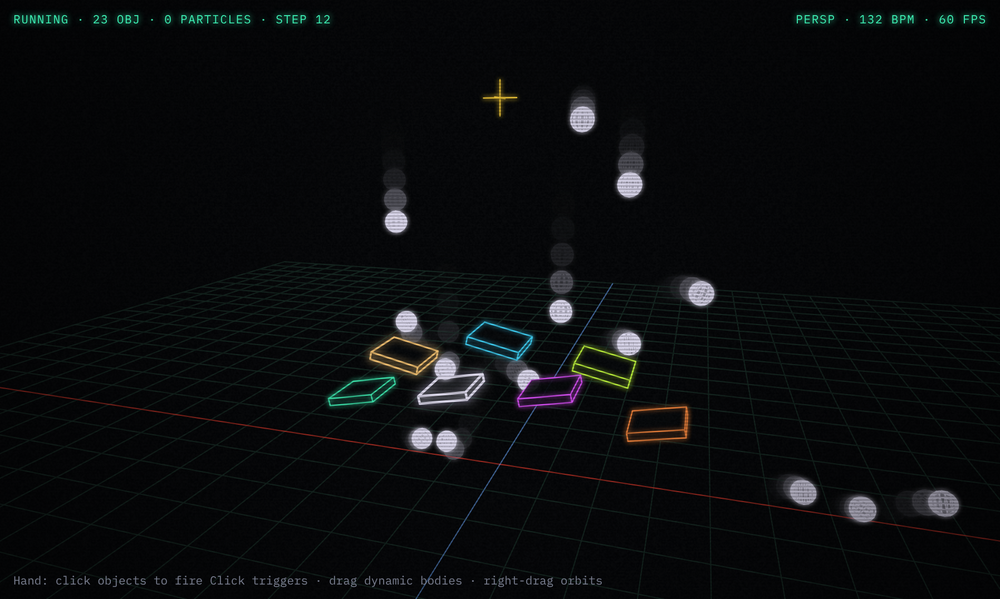
The tuned-tiles instrument after five seconds: a ball every beat, each tile ringing its own pentatonic note and flashing on impact.
A data visualization that reads itself out (Data, Sound)
- Modules → Data and Sound. Data tab → paste your CSV or Sample: energy.
- Under Generate pick the value column and the label column, then Bars, Cursor + label and Sonify value.
- Set Rows / sec to taste (one row per beat = BPM ÷ 60). Play: the cursor walks the bars, the readout shows the row, each value sounds as a pitch.
- For more emphasis, set World → Persistence to about 0.4 so the cursor leaves a fading trail, and give the Cursor a Beat → Flash trigger so it pulses on every step.
An audio-reactive visual (Sound)
- Modules → Sound. Sequencer: Kick on steps 0, 4, 8, 12; Hat on the off-beats.
- Signals → Envelope
kickonseq:0, decay 0.25. Signals → Follow onaudio.high. - Add a Geodesic with routes
kick → Scale (all)amount 0.6 andfollow1 → Hue shiftamount 180. Give it Spin 0, 40, 0. - Add a Curve with preset rose and a route
kick → Line widthamount 2. Add a Spectrum in radial mode behind it. - World → Persistence 0.6. Play and record with Rec.
An interactive toy driven by the mouse (core only)
- Add a Box (width 2, height 0.2) and set Physics Kinematic. Route
mouse.wx → Position Xwith mode = set, smooth 0.05, andmouse.y → Rotation Zamount −25. - Add a few Spheres above it as Dynamic bodies with Bounce 0.8, each with Collision → Flash.
- Play and juggle them with the paddle. Add a Text object reading
T+{t.toFixed(1)}for a timer, and a Key trigger onspacewith Apply impulse0, 8, 0on one sphere for a jump.
Troubleshooting and limits
Most surprises come from three causes: the scene is not running, a module is off, or physics owns the property you are changing.
| Symptom | Likely cause and fix |
|---|---|
| No sound | Browsers start audio only after a click: press Play (or Test) once. Check the Sound module, instrument mute/gain, Master volume, and that the sequencer track or trigger points at the right instrument number. |
| A trigger never fires | It only runs while playing. Collision: is Min impulse too high, the Arg filter wrong, or the object without a physics body? Key: click the viewport first so the page has keyboard focus. Turn on Console → Trace events to watch what arrives. |
| A route does nothing | Is it ticked, aimed at the right object and property, and is the source moving (watch its In meter)? Position and rotation routes are ignored on dynamic bodies. |
| Objects fall through each other | Very fast or very thin bodies can tunnel: thicken the collider, lower speeds, or raise Iterations and Max substeps. |
| A dragged object snaps back after Stop | Expected — changes made by the running scene are discarded. Edit it while stopped. |
| Something is missing from the palette or tabs | It belongs to a module: open Modules. |
| Low frame rate | Lower Bloom or set Glow quality to Fast halo, reduce sphere/torus segments and curve samples, fewer particles, fewer shape routes. The HUD shows FPS. |
| Microphone or MIDI blocked | The artifact viewer restricts them. Use an audio file, or export the HTML player and open it locally in Chrome or Edge. |
| A script or expression error | The Console names the object and line; the object keeps running without that part. |
| The project disappeared | Autosave lives in one browser profile. Re-import your .json or open a saved slot. |
Known limits of v0. Rotation editing uses Euler angles (gimbal lock is possible near ±90° on Y). There are no object groups or parenting yet. Physics colliders are boxes, spheres and prisms — tori and curves collide as simple shapes. The microphone and MIDI depend on the browser and the viewer. The Assist module needs the Claude connection of the artifact viewer.